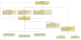
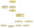

|
|||||||||
| PREV PACKAGE NEXT PACKAGE | FRAMES NO FRAMES | ||||||||
See:
Description
| Interface Summary | |
|---|---|
| Graph2DViewConsumer | Consumes Graph2DViewProvider. |
| Graph2DViewProvider | A GraphViewProvider provides access to Graph2DView objects. |
| PsiClassConsumer | Consumes PsiClassProvider. |
| PsiClassProvider | A PsiClassProvider gets a psi class from a data context. |
| Class Summary | |
|---|---|
| ClassCloudGraph2DViewProvider | Gets a Graph2DView from class cloud. |
| ClassCloudPsiClassProvider | Gets class that is currently selected in class cloud. |
| ClassUnderCursorProvider | Provides access to class under cursor in java editor or class that was source of context sensitive menu. |
| ErrorHandler | Error report submitter to support bug reports. |
| GraphicalNavigatorGraph2DViewProvider | Gets a Graph2DView from graphical navigation panel. |
| GraphicalNavigatorPsiClassProvider | Gets class that is currently selected in graphical navigator. |
| Navigator | Provides navigation to source files. |
| ProjectUtils | Provides project related utility methods. |
| UMLDiagramGraph2DViewProvider | Gets a Graph2DView from UML diagram. |
| UMLDiagramPsiClassProvider | Gets class that is currently selected in active UML diagram. |
| UMLEdgeFactory | Creates graph edges for UML diagrams. |
This package contains classes and interfaces like providers and consumers used for dependency injection on actions. The classes contained in this package are used in several other packages of this project.
The interfaces and classes involved in dependency injection for action classes are displayed in this  and this  UML-Diagram.
|
|||||||||
| PREV PACKAGE NEXT PACKAGE | FRAMES NO FRAMES | ||||||||